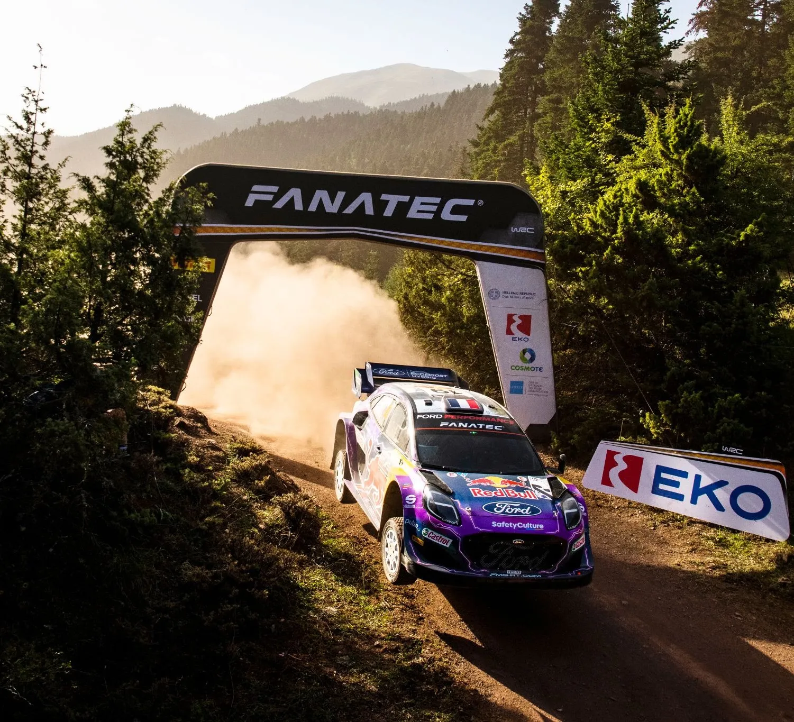
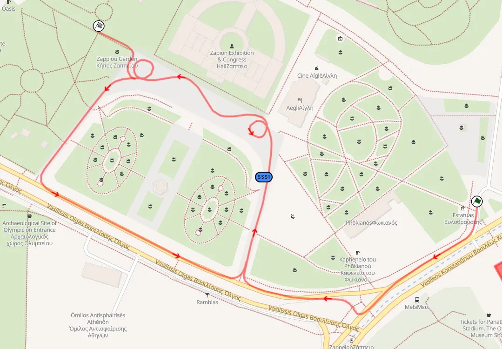

Ράλλυ Ακρόπολις 2025 Preview - Οι Ειδικές του Αγώνα
To Ράλλυ Ακρόπολις είναι το τελευταίο σε σειρά από τρία σκληρά χωμάτινα ράλλυ. Είναι η πρώτη φορά που ο εθνικός μας αγώνας διεξάγεται το καλοκαίρι από τότε που επέστρεψε στο καλεντάρι του WRC το 2021.
'Iσως στην τελευταία έκδοση του ράλλυ με επίκεντρο τη Λαμία για το άμεσο μέλλον, το φετινό Ακρόπολις θα ξεκινήσει και πάλι από την Αθήνα, κατευθυνόμενο προς το Λουτράκι την Παρασκευή, και από εκεί προς τη Λαμία μέσω των ειδικών διαδρομών Στείρι και Θήβα στη Βοιωτία. Το Σάββατο ο αγώνας μεταφέρεται στη Φθιώτιδα και τη Φωκίδα, ενώ την Κυριακή η ολοκαίνουργια διαδρομή του Σμοκόβου περνά για πρώτη φορά από το 1997 από τη Θεσσαλία.
Πρόκειται για τη μεγαλύτερη σε μήκος έκδοση του αγώνα τα τελευταία 12 χρόνια, περιλαμβάνοντας κλασικές ειδικές όπως η Παύλιανη, οι Καρούτες και ο Ταρζάν, αλλά όχι το Ελευθεροχώρι.
Πέμπτη
Η πρώτη ημέρα του Ράλλυ Ακρόπολις ξεκινάει με το Shakedown στη Λαμία, μετά το οποίο τα πληρώματα θα πρέπει να κινηθούν προς την Αθήνα για την Τελετή Έναρξης του αγώνα και μία υπερειδική διαδρομή στο κέντρο της πρωτεύουσας, στο Ζάππειο.
Shakedown: Λυγαριά - 3.62km
Αλλαγές σε σχέση με το 2024: Ίδιο με το περσινό Shakedown.
Περιγραφή ειδικής: Η Λυγαριά είναι ένα αντιπροσωπευτικό Shakedown, αλλά όχι ιδανικό για τους θεατές, καθώς δεν υπάρχουν σημεία πρόσβασης μέσα στην ειδική.
Η εκκίνηση είναι σε ένα ανηφορικό τεχνικό και σκληρό κομμάτι, με την ειδική να γίνεται πιο φαρδιά και γρήγορη μετά τα 2.06km και να διατηρεί τον ίδιο χαρακτήρα μέχρι το τέλος.
SSS1: EKO Athens SSS - 1.5km
Αλλαγές σε σχέση με το 2024: Καινούρια ειδική.

Περιγραφή Ειδικής: Ο αγώνας ξεκινά με μία υπερειδική στο κέντρο της Αθήνας. Η εκκίνηση της βρίσκεται ακριβώς απέναντι από το Παναθηναϊκό Στάδιο, όπου θα πραγματοποιηθεί και η εκκίνηση του ράλλυ.
Τα αυτοκίνητα θα μπαίνουν στο Ζάππειο, όπου και θα κάνουν δύο γύρους στους δρόμους που συνδέουν το μέγαρο με την λεωφόρο Βασιλίσσης Όλγας, με δύο "ντόνατς" έξω α΄πο το Μέγαρο σε κάθε γύρο.
Ο χώρος έξω από το Ζάππειο, οπού και θα είναι και τα δύο ντόνατς
Παρασκευή
Η Παρασκευή είναι η πρώτη πλήρης ημέρα του αγώνα, και έχει μορφή όμοια με τα έτη 2021–2023, με τα πληρώματα να κινούνται από το Λουτράκι στη Λαμία.
Υπάρχει μόνο μια επαναλαμβανόμενη ειδική, πράγμα που καθιστά μειονέκτημα το να είναι κάποιος πρώτος στον δρόμο, λόγω road sweeping.
Είναι η μεγαλύτερη ημέρα τόσο σε αγωνιστικά χιλιόμετρα αλλά και σε απλές.
SS2/4: Άγιοι Θεόδωροι - 26.76km
Αλλαγές σε σχέση με το 2024: Η ειδική είναι ίδια με πέρσι, αλλά με καινούρια εκκίνηση λίγο πριν την περσινή.
Οι Άγιοι Θεόδωροι είναι ουσιαστικά συνδιασμός των δύο ειδικών της περιοχής το 2021. Η ειδική ακολουθεί αρχικά την ίδια διαδρομή με τους Άγιους Θεόδωρους του 2021, αλλά στην άσφαλτο στρίβει δεξιά, όχι αριστερά, αποφεύγοντας το ασφάλτινο κομμάτι και το πολύ τεχνικό και σκληρό κομμάτι που κόπηκε πρόπερσι από το Λουτράκι λόγω των βροχοπτώσεων. Το δεύτερο πέρασμα θα είναι πάρα πολύ σκληρό!

Οι φετινοί Άγιοι Θεόδωροι, και τα κομμάτια που μοιράζεται με τις ειδικές του 2021
Περιγραφή Ειδικής: H ειδική ξεκινά σε έναν ανηφορικό δρόμο, που είναι αμμώδης και τεχνικός. Μετά από περίπου 3 χιλιόμετρα, γίνεται πιο στενή, και αρκετά πιο σκληρή. Το κομμάτι αυτό είναι αρκετά σπαστήρι, και υπάρχουν πολλές λακούβες και χασίματα. Στα 4.4 χιλιόμετρα υπάρχει ένα άλμα που το 2021 ήταν hotspot για πολλούς φωτογράφους.
Μετά το άλμα η ειδική γίνεται πιο smooth και γρήγορη για ένα χιλιόμετρο περίπου. Ύστερα από μία φουρκέτα, που είναι και πρόσβαση της ειδικής, ο δρόμος γίνεται πάλι σπαστήρι, με πολλές πέτρες, και σε κάποια κομμάτια φαίνεται το παλιό πλακόστρωτο από τον Β' Παγκόσμιο.
Μετά από ένα μικρό ασφάλτινο κομμάτι, η ειδική αλλάζει εντελώς χαρακτήρα. Γίνεται πιο γρήγορη, και με πολύ περισσότερο flow, με γρήγορες στροφές με αρκετό κάμπερ. Στα 11.5 χλμ, συναντά τον δρόμο από το Λουτράκι του 2021. Η ειδική συνεχίζει να έχει τον ίδιο χαρακτήρα μέχρι περίπου τα 14.9 χιλιόμετρα, όπου γίνεται στενή και τεχνική, με πολλές αργές στροφές. Στα 17.5 χλμ είναι το πιο τεχνικό και αργό κομμάτι της ειδικής, που έχει μία σειρά από φουρκέτες.
Σε αυτό το κομμάτι τούμπαρε ο Elfyn Evans πέρσι.
Ο δρόμος συνεχίζει να είναι στενός και τεχνικός μέχρι τα 21.9 χλμ, όπου και η ΕΔ γίνεται πιο φαρδιά και γρήγορη, μέχρι τον τερματισμό.
Πέρσι ο Dani Sordo είχε κλατάρισμα σε αυτή την ειδική, χάνοντας την πρωτοπορία από τον ομόσταυλό του, τον Thierry Neuville, και ο Gregoire Munster βγήκε εκτός δρόμου.
SS3: Λουτράκι - 12.90km
Αλλαγές σε σχέση με το 2024: Ίδια με την περσινή ειδική που είχε χρησιμοποιηθεί το Σάββατο. Χρησιμοποιεί δρόμους που έχουμε ξαναδεί πολλές φορές στο Ακρόπολις, και είναι ουσιαστικά συνδιασμός της ΕΔ Πίσσια από το 2023, και το Χαρβάτι του 2022. Είναι μια διαδρομή που χρησιμοποιείται συχνά στο Ελληνικό Πρωτάθλημα. Η ίδια διαδρομή έχει επίσης ξαναεμφανιστεί στο Ακρόπολις με άλλα ονόματα, όπως Πίσσια και Χαρβάτι.

Το Λουτράκι του 2025, και τα κοινά κομμάτια από το Χαρβάτι του 2022 και τα Πίσσια του 2023
Περιγραφή Ειδικής: Η αρχή της ειδικής είναι τεχνική με πολλές αργές στροφές, αλλά μετά το 3ο χιλιόμετρο γίνεται πιο γρήγορη, με ωραία ροή. Στο 9ο χιλιόμετρο συναντά τον δρόμο από το Χαρβάτι. Ο δρόμος αυτός είναι στενός, πάρα πολύ τεχνικός, με πάρα πολλές συνεχόμενες στροφές. Το χώμα επίσης είναι πιο σκούρο από πριν.
Η ειδική τρέχει παράλληλα σε ένα ξεραμένο ρέμα (που ανάλογα με τον καιρό μπορεί να έχει νερό), και ο δρόμος έχει από τη μία πλευρά το βουνό και από την άλλη γκρεμό!
SS5: Θήβα - 19.58km
Αλλαγές σε σχέση με το 2024: Παρόμοια με την ειδική του 2021 αλλά με νέα εκκίνηση, και δεν περνά από το πεδίο βολής. Η εκκίνηση χρησιμοποιεί έναν δρόμο που χρησιμοποιήθηκε τελευταία φορά το 2012, παραλείποντας το τεχνικό “Mickey Mouse” κομμάτι που ήταν η εκκίνηση της ειδικής το 2021 και το 2024.

Η φετινή Θήβα (κόκκινη) σε σχέση με αυτή του 2021 (μωβ)
Περιγραφή Ειδικής: Η Θήβα είναι μια ειδική με πολλές αλλαγές χαρακτήρα και χρησιμοποιεί πολλούς διαφορετικούς δρόμους στον λόφο του Μοσχοποδίου.
Η νέα εκκίνηση είναι σε αμμώδη και τεχνικό δρόμο και έχει ένα μεγάλο άλμα λίγο πριν στρίψει στον δρόμο της ειδικής του 2024.
Ακολουθεί ένα κυρίως γρήγορο κομμάτι, με ένα άλμα στα 5.58km, μετά από το οποίο η ειδική πηγαίνει σε έναν νέο δρόμο, που είναι πιο στενός και σκληρός. Η υπόλοιπη ειδική είναι στους δρόμους εντός του Μοσχοποδίου, και χρησιμοποιεί πολλούς διαφορετικούς δρόμους που μπορεί να είναι ή αμμώδεις, ή πιο σκληροί με αρκετές πέτρες.
Μεταξύ των 7.67 και 12.95 km, η ειδική είναι αργή και τεχνική, όπου και φτάνει στην φουρκέτα με την βαρέλα.
Μετά από αυτό ακολουθεί ένα μικρό γρήγορο κομμάτι σε έναν φαρδύ και αμμώδη δρόμο, και ύστερα η ειδική πηγαίνει σε έναν που είναι σπαστήρι στα 14.31 km με αργές στροφές διαρκείας. Ο δρόμος αυτός στενεύει, και τέλος οδηγεί την ειδική σε έναν φαρδύ και γρήγορο δρόμο, μέχρι τον τερματισμό.
SS6: Στείρι - 24.18km
Αλλαγές σε σχέση με το 2024: Πρακτικά καινούρια ειδική. Είναι συνδιασμός της ειδικής Δίστομο από το Ιστορικό Ακρόπολις του 2022, και της παλιάς ομώνυμης ειδικής που είχε χρησιμοποιηθεί τελευταία φορά το 1997.

Χάρτης της φετινής ειδικής (κόκκινο) σε σύγκριση με την ειδική του 2022 (γαλάζιο) και της παλίας ειδικής του 1997 (πράσινο)
Περιγραφή Ειδικής: Η εκκίνηση της ειδικής είναι στις ανεμογεννήτριες κοντά στον Καρακόλιθο, σε έναν ανηφορικό, μέτρια φαρδύ, δρόμο με καλό οδόστρωμα, με γρήγορα κομμάτια και φουρκέτες. Στα 7.7km ενώνεται με την παλιά ειδική, και λίγο μετά γίνεται στενή και σκληρή. Στα 15.2km υπάρχει ένα ξέφωτο μετά το οποίο η ειδική γίνεται σπαστήρι και τεχνική, με μία δύσκολη κατηφορική φουρκέτα στα 19.96km.
Λίγο αργότερα η ειδική φτάνει το μέγιστο της υψόμετρο και μετά γίνεται κατηφορική. Μια σειρά κατηφορικών στενών φουρκέτων ακολουθούν, με γκρεμούς στην εξωτερική τους. Το τέλος της ειδικής είναι σε έναν γρήγορο δρόμο, που είναι στενός και σκληρός.
SS7: Ελάτεια - 11.58km
Αλλαγές σε σχέση με το 2024: Χρησιμοποιεί τα πρώτα 5.5 χιλιόμετρα της περσινής ειδικής Ρεγκίνι ανάποδα. Είναι η ίδια ειδική με αυτή του 2022.

Η φέτινη Ελάτεια (κόκκινο) και το περσινό Ρεγκίνι (γαλάζιο)
Περιγραφή Ειδικής: Τα πρώτα 2.8 χιλιόμετρα είναι αργά και τεχνικά, με την ειδική να είναι ανηφορική, με φουρκέτες, και στροφές με καμπερ. Για τα επόμενα 3 χιλιόμετρα η ειδική γίνεται κατηφορική και γρηγορότερη, με πολλές γρήγορες στροφές. Υπάρχουν πολλές εναλλαγές επιφάνειας στο οδόστρωμα, με διαφορετικούς βαθμούς σκληρότητας.
Η διαδρομή ενώνεται με αυτή της περσινής ειδικής στα 5.82 χιλιόμετρα, ανάποδα. Τα γνωστά "νερά" είναι λίγο μετά, στα 6.54 χλμ, και υπάρχει και ένα μικρότερο water splash στα 6 χλμ.
Η ειδική αλλάζει ρυθμό ξανά, και γίνεται παρόμοια με το αρχικό της κομμάτι, μόνο που είναι κατηφορική αντί για ανηφορική. Υπάρχουν πολλές φουρκέτες και αργά και τεχνικά κομμάτια, με την ειδική να κατεβαίνει το βουνό μέχρι τον τερματισμό.
Σάββατο
Το Σάββατο είναι λίγο μικρότερο σε σχέση με την Παρασκευή και έχει 2 λουπ με τρεις επαναλαμβανόμενες ειδικές σε Φθιώτιδα και Φωκίδα. Οι Καρούτες επιστρέφουν μετά από μονοετή απουσία, αλλά χωρίς το κομμάτι των Βωξιτών, και η Παύλιανη επιστρέφει στην κλασική της χάραξη.
SS8/11: Παύλιανη - 24.58km
Αλλαγές σε σχέση με το 2024: Χρησιμοποιεί κομμάτια από την περσινή ειδική της Άνω Παύλιανης, σε ανάποδη φορά. Για το 2025 η ειδική επιστρέφη στην κλασική της χάραξη.

Η φετινή ειδική συγκριτικά με την περσινή Άνω Παύλιανη (γαλάζιο)
Περιγραφή Ειδικής: Τα πρώτα 3.75 χλμ της ειδικής είναι σε ένα πολύ αργό και τεχνικό δρόμο μέσα στο δάσος. Γίνεται γρηγορότερη λίγο μετά, φεύγοντας από το δάσος στα 6.57 χλμ. Η ειδική συνεχίζει σε οροπέδιο και φτάνει στις Καταβόθρες της Οίτης, που είναι και το πιο διάσημο κομμάτι της ειδικής.
Μετά από ένα χάσιμο, η ειδική ξαναμπαίνει στο δάσος στα 11.5 χλμ με ένα water splash σε μία κλειστή φουρκέτα στα 12 χιλιόμετρα. Το μέγιστο υψόμετρο της ειδικής είναι τα 1665 μέτρα, μετά από όπου γινέται κατηφορική. Αυτό το κομμάτι είναι σε έναν στενό, αργό και τεχνικό δρόμο, με την ειδική να παραμένει έτσι μέχρι τον τερματισμό.
Ο Thierry Neuville ΄εσπασε την ανάρτηση του από την πρωτοπορία στο δεύτερο πέρασμα από την Παύλιανη το 2023.
SS9/12: Καρούτες - 19.48km
Αλλαγές σε σχέση με το 2024: Είναι η ίδια ειδική με το 2023 αλλά με το κομμάτι των Βωξιτών να έχει κοπεί.

Οι Καρούτες του 2025 (κόκκινο) συγκριτικά με αυτές του 2023 (μπορντό)
Περιγραφή Ειδικής: Τα πρώτα μέτρα είναι σε άσφαλτο, με την ειδική να φτάνει σε έναν φαρδύ χωματόδρομο μετά από 500 μέτρα. Η ειδική στρίβει σε έναν στενότερο και πιο σκληρό δρόμο, που είναι αρκετά γρήγορος πάραυτα. O ίδιος δρόμος γίνεται φαρδύτερος στα 5.14 χλμ. Υπάρχουν πολλές εναλαγές στην επιφάνεια του οδοστρώματος, με την ειδική να αλλάζει από σκληρό σε πιο καλό οδόστρωμα πολύ συχνά.
O δρόμος γίνεται ακόμα πιο φαρδύς για λίγο, αλλά στενεύει, και γίνεται κατηφορικός στα 7.7 χιλιόμετρα. Η ειδική είναι τεχνική και σπαστήρι σε αυτό το κομμάτι, αλλά μετά από μία κλειστή φουρκέτα στα 12.1 χλμ ο δρόμος γίνεται καλύτερος και ακολουθεί ένα τμήμα με πολλές στροφές.
Μετά από μία σειρά από κατηφορικές φουρκέτες η υπόλοιπη ειδική είναι πολύ γρήγορη, flat out σχεδόν, μέχρι τον τερματισμό.
SS10/13: Οινοχώρι - 17.66km
Αλλαγές σε σχέση με το 2024: Ίδια με την περσινή ειδική που είχε χρησιμοποιηθεί την Κυριακή.
Περιγραφή Ειδικής: Τα πρώτα 6.26 χιλιόμετρα της ειδικής είναι σε ένα δρόμο που εξυπηρετεί ένα νταμάρι. Είναι στενός, καλά συντηρημένος, και έχει φουρκέτες και γρη΄γορες/μέτριες στροφές. Ο δρόμος αυτός γίνεται φαρδύτερος καθώς η ειδική περνά μέσα από τα νταμάρια, και μετά από ένα τεχνικό κομμάτι γίνεται γρήγορη για λίγο.
Όταν βγει από το νταμάρι, η ειδική πηγαίνει σε έναν νέο δρόμο μέσα στο δάσος, και γίνεται πιο σκληρή. Παραμένει γρήγορη μέχρι τα 7.34 χιλιόμετρα, και μετά ακολουθεί ένα αργό και τεχνικό κομμάτι.
Μετά από ένα πολύ σύντομο γρήγορο κομμάτι, η ειδική βρίσκει την άσφαλτο για περίπου 200 μέτρα, και στην συνέχεια στρίβει σε έναν αργό και τεχνικό δρόμο, με ένα άλμα στα 10 χιλιόμετρα. Ο δρόμος αυτός είναι πολύ τεχνικός με πολλές αργές στροφές μέχρι τον τερματισμό.
Πέρσι, ο Fabio Schwarz τούμπαρε σε αυτή την ειδική.
Κυριακή
Η τελευταία ημέρα του Ακρόπολις έχει δύο επαναλαμβανόμενες ειδικές, τον θρυλικό Ταρζάν και μια καινούρια ειδική, το Σμόκοβο.
SS14/16: Σμόκοβο - 26.16km
Αλλαγές σε σχέση με το 2024: Ολοκαίνουρια ειδική, δεν έχει ξαναχρησιμοποιθεί στο Ακρόπολις. Δεν έχει σχέση με την παλαίοτερη ειδική με το όνομα "Λουτρά Σμοκόβου".
Περιγραφή Ειδικής: Η εκκίνηση της ειδικής διαδρομής είναι σε έναν τεχνικό δρόμο με στροφές μέτριας ταχύτητας και κάποια λίγα γρήγορα σημεία. Στο 4.5ο χιλιόμετρο, η διαδρομή στρίβει σε στενότερο δρόμο και γίνεται κατηφορική και πιο αργή.
Μετά από ένα water splash στο 9,3ο χιλιόμετρο, η ειδική γίνεται ανηφορική, πάλι σε έναν στενό δρόμο, ο οποίος γίνεται πιο φαρδύς στα 12 χιλιόμετρα. Έπειτα ακολουθούν δύο σειρές από ανηφορικές φουρκέτες, ανάμεσα σε ένα γρήγορο κομμάτι. Η διαδρομή περνάει δίπλα από το χωριό Πάππα στο 14,5ο χιλιόμετρο, με μια κλειστή φουρκέτα που οδηγεί σε ένα σύντομο κομμάτι με τσιμέντο.
Στο συνολό της η διαδρομή είναι πολύ κλειστή, και πάρα πολύ τεχνική.
Λίγο αργότερα, η ειδική κατηφορίζει ξανά και γίνεται πιο γρήγορη μετά το 16.2ο χιλιόμετρο. Υπάρχει και δεύτερο watersplash στα 21.3 χιλιόμετρα, με το τέλος της διαδρομής να είναι αργό και τεχνικό.
Εικόνες από την ειδική του Σμοκόβου
Dimitris Rizos - Facebook
SS15/17: Ταρζάν - 23.37km
Αλλαγές σε σχέση με το 2024: Ίδια ειδική με πέρσι.
Περιγραφή ειδικής: Ο Ταρζάν είναι μια από τις θρυλικότερες ειδικές διαδρομές του αγώνα. Γνωστός για τα σκληρότερα κομμάτια του αγώνα στο παρελθόν, έχει δει κάποια από αυτά να έχουν ασφαλτοστρωθεί τα τελευταία χρόνια, αλλά και στην μοντέρνα του χάραξη είναι μια ειδική που έχει αγαπηθεί τόσο από τους θεατές αλλά και από τους οδηγούς. Είναι η μόνη ειδική που παραμένει απαράλλαχτη κάθε χρόνο μετά το 2021.
Τα πρώτα χιλιόμετρα της ειδικής είναι σε έναν δρόμο με φουρκέτες και αργές στροφές. Έπειτα από ένα σύντομο γρήγορο κομμάτι, ακολουθεί ένα μέσα στο δάσος, που είναι σκληρό και στενό, και έχει ένα μιξ αργών και τεχνικών, αλλά και γρήγορων στροφών.
Η ειδική φεύγει από το δάσος και κατηφορίζει, με μία μεγάλη ευθεία πριν από μία σειρά από φουρκέτες, και έπειτα ξαναμπαίνει στο δάσος.
Στα 15 χιλιόμετρα, συναντά τον δρόμο από την Ρεντίνα, και η ειδική γίνεται γρηγορότερη, με καλύτερο οδόστρωμα, αλλά σε πολλά σημεία φαίνεται το "πετρόστρωτο" στην επιφάνεια, που είναι αρκετά σκληρό.
Ύστερα από ένα ακόμη τεχνικό κομμάτι στα 21 χιλιόμετρα, η ειδική τερματίζει στην Παλιά Γιαννιτσού.
Τι θα άλλαζα:
Είναι δύσκολο να γίνουν σημαντικές αλλαγές στο ράλλυ χωρίς να αλλοιωθεί η δομή της κάθε ημέρας, ειδικά της Παρασκευής. Θα ήμουν υπέρ της αντικατάστασης της Θήβας με τη Λιβαδειά, αλλά έτσι θα δημιουργούνταν μία πολύ "κακή" απλή διαδρομή για τους οδηγούς και πιθανόν θα ήταν και πολύ κοντά στην ειδική Στείρι. Εφόσον ο αγώνας πρέπει να περνά από το Λουτράκι, δεν μπορούν να αλλάξουν πολλά. Η ειδική της Δάφνης από το 2022 είναι επίσης κάτι που θα ήθελα να ξαναδώ στον αγώνα.
Το Σάββατο, θα προτιμούσα να δω το Δροσοχώρι, (η Γραβιά του 2021 ή κάποια παραλλαγή της σε ανάποδη φορά) αντί για το Οινοχώρι. Θα ήθελα επίσης οι Καρούτες να είναι ίδιες με το 2023, αλλά θα έπρεπε να υπάρχει regrouping στην Ιτέα μετά.


Comments